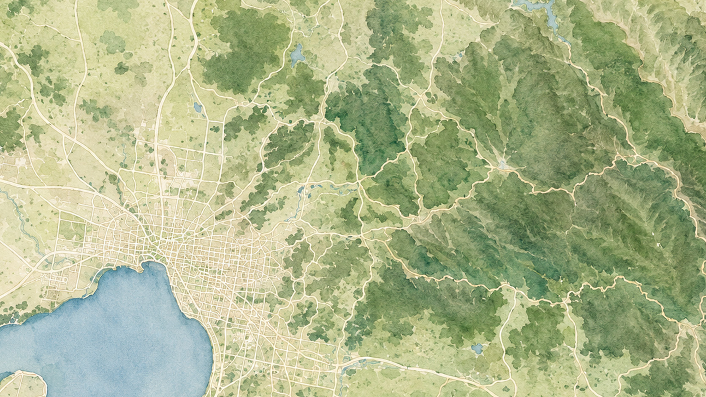
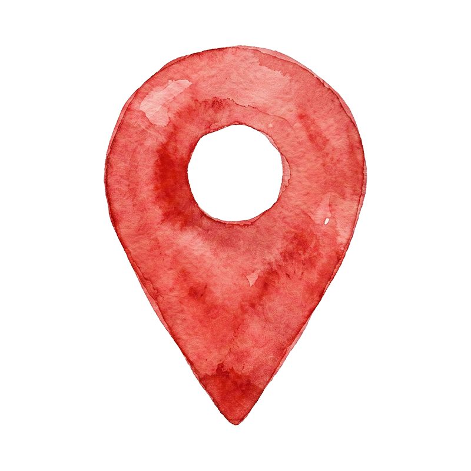
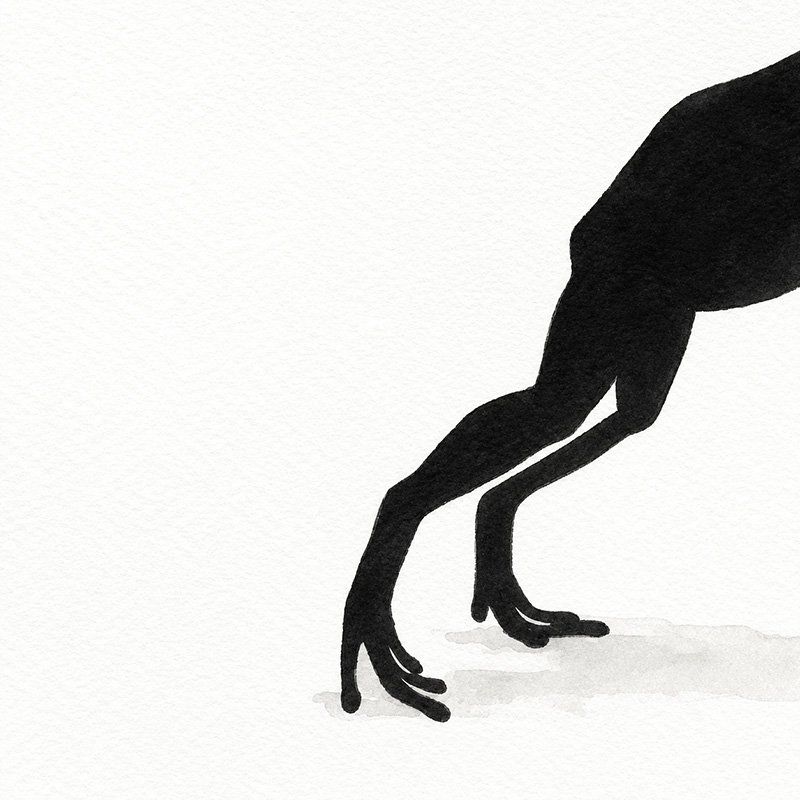

Yalukit Willam Nature Reserve
Jawbone Marine Sanctuary 🔒
Newport Lakes Reserve 🔒
The Rosanna Golf Club 🔒
Trin Warren Tam-Boore 🔒
Enoch Falls 🔒
Baw Baw National Park 🔒
Drag to explore
Other locations are greyed out — this prototype demonstrates a single full loop.

Drag to explore
Drag to explore
A frog call is echoing somewhere in this scene…
Which frog is calling?
Drag frog name here
🐸
You've found the Southern Bell Frog!

The frog has fled. Look for it again in another scene!